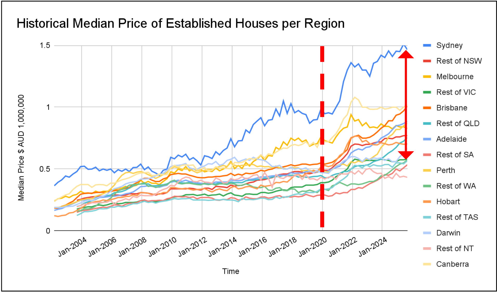
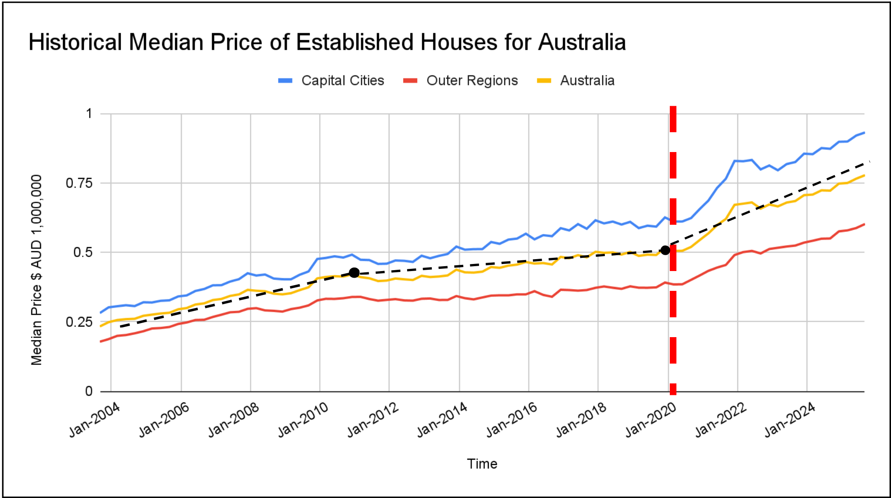

Housing prices both in Australia and the rest of the world are greatly impacted by the number of available house, basic supply and demand.

The historical median price for established houses for each capital city and rest of the state over time.
Prices grow steadily from 2003 to 2020, with the exception of Sydney, Canberra and Melbourne which consistently have been more expensive and erratic compared to other regions. As a result of the COVID-19 Pandemic, as indicated by the perforated red line, the demand for housing (especially with less people per household) increased drastically and median prices increased at an unprecedented rate. This has led to a larger separation in median price between the most and least population dense regions as denoted by the red arrow. The exceptional drop between 2008-2010 was caused by the Great Recession and the resulting economic downturn and housing market crash. This contrasts the spike caused by COVID, as banks sold houses for lower prices to recover losses; resulting in less loans provided, leading to a drop in housing supply and demand.

The historical median price for established houses averaged for all state capitals, outer regions, and all regions in Australia over time.
Figure 2 highlights the averages of the capital cities and the rural regions of each state, with the yellow line being the average of the two lines. The areas of interest; the drop in 2008 and spike in 2020, can also be seen in Figure 1, albeit more visible due to the removal of unecessary data. Both inner city and regional prices are affected by both events, but the capital cities are affected more likely due to the larger population density. Natural Inflation is more visible in Figure 2 than Figure 1, with the housing prices changing between each event as denoted by the black perforated lines.
Estimated resident population, population change, and net overseas migration.
View Section